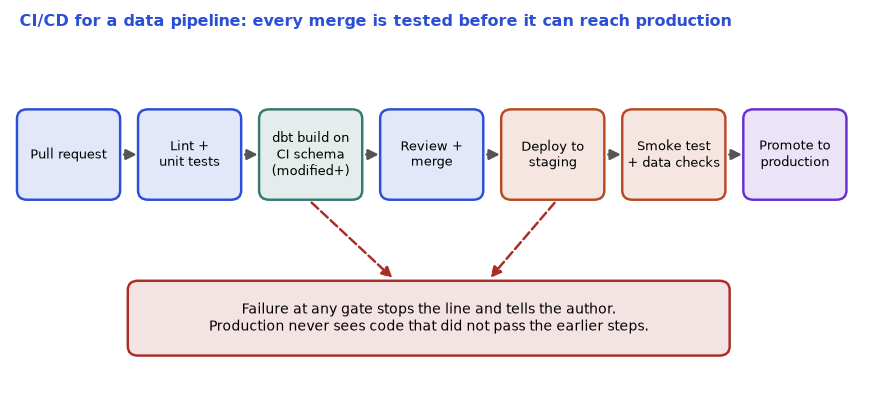

Your pipeline works on your laptop. Now it must run every night on a server that you do not touch, be changed safely by five engineers, keep its passwords secret, tell you when it breaks, not cost a fortune, and not leak customers' phone numbers. That is what this chapter is about. DataOps means applying the habits of software engineering (version control, automated tests, automated deployment, monitoring) to data work. By the end you will be able to put a pipeline in a Docker container, explain what Kubernetes and Terraform do, read a CI/CD file, store secrets safely, write the alerts that matter for data (freshness and volume), estimate cost, and handle personal data properly.
Honest note: Docker, Kubernetes, Terraform, GitHub Actions and cloud tools are not available in this sandbox. Their code is labelled "not run here" and is minimal and standard; check flags against your tool version. The Python checks (masking, freshness, volume alert, cost arithmetic) were really run (/tmp/de_lab2/ops.py).
| Word | Plain meaning | ShopKart example |
|---|---|---|
| Image | A read-only package: OS pieces, Python, libraries, your code | shopkart/orders-loader:1.4.0 |
| Container | A running copy of an image, isolated from others | one nightly loader process |
| Dockerfile | The recipe to build an image | list of steps starting FROM python:3.12-slim |
| Registry | A store for images | a cloud container registry |
| Volume | Disk that outlives the container | Postgres data folder |
| Docker Compose | One file to run several containers together | Airflow + Postgres + your app on a laptop |
| Pod | Smallest Kubernetes unit: one or more containers together | one loader pod |
| Deployment | Keeps N copies of a pod running, rolls out updates | 3 consumer pods |
| Service | A stable address in front of pods | orders-api:8080 |
| Job / CronJob | A pod that runs to completion / on a schedule | nightly backfill |
| ConfigMap / Secret | Settings / sensitive settings given to pods | database host / password |
| Helm | A package manager for Kubernetes files (charts) | install Airflow with one command |
# not run here
FROM python:3.12-slim
WORKDIR /app
COPY requirements.txt .
RUN pip install --no-cache-dir -r requirements.txt
COPY src/ ./src/
USER 10001
CMD ["python", "-m", "src.load_orders"]Line by line: FROM chooses a small base image. WORKDIR sets the folder. We copy requirements.txt and install before copying the code, because Docker caches each step: if only your code changes, the slow pip install layer is reused, and a rebuild takes seconds instead of minutes. USER 10001 runs as a non-root user (safer). CMD is the default command.
Best practices to remember: pin versions (pandas==2.2.2, a specific base image tag, never latest), keep images small (slim base, multi-stage builds), one process per container, never put secrets in the image (anyone who can pull the image can read them), use a .dockerignore file, log to the standard output.
Commands (not run here):
# not run here
docker build -t shopkart/orders-loader:1.4.0 .
docker run --rm --env-file .env shopkart/orders-loader:1.4.0
docker compose up -d # start all services in docker-compose.yml
docker logs -f <container> # follow logs kubectl apply -f deployment.yaml
|
[ API server ] <- you talk only to this
|
[ scheduler ] chooses a node for each pod
|
Node A Node B Node C
[pod consumer-1] [pod consumer-2] [pod consumer-3]
^------------ Deployment keeps 3 pods alive ---------^
CronJob "nightly-backfill" -> creates a Job -> a pod that runs and exitsHow to read it: you describe the desired state ("3 copies of this image, 500 MB memory each") in a YAML file. Kubernetes keeps comparing desired and actual state and fixes differences: a pod dies, it starts another. This "reconciliation" idea is the heart of Kubernetes.
A minimal Deployment, not run here:
# not run here
apiVersion: apps/v1
kind: Deployment
metadata: {name: orders-consumer}
spec:
replicas: 3
selector: {matchLabels: {app: orders-consumer}}
template:
metadata: {labels: {app: orders-consumer}}
spec:
containers:
- name: consumer
image: shopkart/orders-consumer:1.4.0
resources:
requests: {cpu: "500m", memory: "512Mi"}
limits: {cpu: "1", memory: "1Gi"}
envFrom:
- secretRef: {name: orders-db-credentials}requests is what the scheduler reserves; limits is the ceiling (going over the memory limit kills the pod: "OOMKilled"). 500m means 500 millicores, half a CPU core. replicas: 3 ties to the Kafka rule in Chapter 11: 3 consumers share the partitions.
Problem 12.1.1 Each consumer pod requests 500m CPU and 512 MiB. You run 3 replicas. How much CPU and memory does the Deployment reserve? How many nodes of 4 CPU and 16 GiB are needed, ignoring system overhead?
| Formula | total = replicas × per-pod request |
|---|---|
| Plug in | CPU: 3 × 500m; memory: 3 × 512 MiB |
| Compute | CPU = 1,500m = 1.5 cores; memory = 1,536 MiB = 1.5 GiB. One node has 4 cores and 16 GiB, so both fit in one node. |
| Answer | 1.5 cores and 1.5 GiB. One node is enough for capacity, but use at least 2 nodes so a node failure does not stop the service. |
| Check | 1.5 / 4 = 37.5% of CPU, 1.5 / 16 = 9.4% of memory. CPU is the tighter resource. |
| Why it matters | Requests drive cost and scheduling. Too high wastes money; too low causes noisy neighbours and throttling. |
Problem 12.1.2 A container limit is 1 GiB, and the job loads a 1.4 GiB CSV with pandas. What happens, and what are two fixes?
| Step 1 | Memory use passes 1 GiB, so the kernel kills the process; Kubernetes shows OOMKilled, and the pod restarts (a crash loop). |
|---|---|
| Step 2 | Fix by reading in chunks or using a columnar engine (DuckDB, Chapter 3) so memory stays low; or raise the limit after measuring the real peak. |
| Answer | The pod is OOMKilled; stream the data in chunks, or raise the limit based on a measured peak. |
| Check | Chunk size 100 MB uses about 0.1 GiB for the data plus overhead, far below 1 GiB. |
| Why it matters | The first Kubernetes incident of most data engineers is an OOMKill. |
KubernetesExecutor and Argo). Managed services hide Kubernetes but the ideas stay.latest or unpinned libraries. The pipeline passes today and breaks next week because a library updated. Pin versions.Check yourself
requirements.txt before the source code in a Dockerfile? Answer: so the slow dependency layer is cached when only code changes.OOMKilled mean? Answer: the container used more memory than its limit and was killed.Terraform describes infrastructure in a language called HCL. Key words: provider (a plugin for a cloud, such as AWS, Azure, GCP, Snowflake), resource (a thing to create), state (a file where Terraform records what it created; the single most precious file), module (a reusable group of resources), plan (show what would change), apply (make the change), destroy. Not run here:
# not run here
terraform {
required_providers { aws = { source = "hashicorp/aws", version = "~> 5.0" } }
backend "s3" { bucket = "shopkart-tf-state", key = "data-platform/terraform.tfstate", region = "ap-south-1" }
}
provider "aws" { region = "ap-south-1" }
resource "aws_s3_bucket" "raw" {
bucket = "shopkart-raw-${var.env}"
}
resource "aws_s3_bucket_versioning" "raw" {
bucket = aws_s3_bucket.raw.id
versioning_configuration { status = "Enabled" }
}Explanation: the backend keeps the state in a shared bucket (never in Git, because it can contain secrets; add locking so two people cannot apply at once). var.env lets the same code create shopkart-raw-dev and shopkart-raw-prod. The reference aws_s3_bucket.raw.id creates a dependency, so Terraform builds the bucket first.
The workflow is terraform init, terraform plan, review the plan like a code diff, then terraform apply. The idea behind the plan is that Terraform compares your files with the state and the real world, and prints only the difference: "1 to add, 0 to change, 0 to destroy". Drift means someone changed the real thing by hand, so it no longer matches the code; plan shows it. Alternatives (awareness): CloudFormation (AWS), Bicep (Azure), Pulumi (real programming languages), and OpenTofu (an open-source fork of Terraform).
A CI pipeline runs on each pull request. For a data repository the steps are:
ruff, sqlfluff).dbt build on a small slim CI schema (Chapter 7).A GitHub Actions file, not run here:
# not run here
name: ci
on: [pull_request]
jobs:
test:
runs-on: ubuntu-latest
steps:
- uses: actions/checkout@v4
- uses: actions/setup-python@v5
with: {python-version: "3.12"}
- run: pip install -r requirements.txt
- run: ruff check .
- run: pytest -qEnvironments: dev (free to break), staging (like prod, with a copy or sample of data), prod. Rules that save careers: never test against production tables; use a separate schema per pull request; promote the same built image from dev to prod instead of rebuilding; keep a way to roll back (previous image tag, git revert, table time travel from Chapter 3).
Git workflow: short-lived branches, pull requests with review, main always deployable, commit messages that say why.
A secret is a password, API key or token. Rules:
Secret objects are only base64-encoded by default (not encrypted) unless the cluster adds encryption or an external secrets tool.raw/ and nothing else. An IAM role (identity and access management) attached to the workload is better than long-lived keys, because there is nothing to leak.Problem 12.2.1 A terraform plan prints "Plan: 2 to add, 1 to change, 1 to destroy." The destroy is aws_s3_bucket.raw. What do you do?
| Step 1 | Stop. A destroy on a raw bucket may delete data permanently. |
|---|---|
| Step 2 | Find why: a renamed resource (Terraform sees "old removed, new added") or a changed argument that forces replacement. Use terraform state mv or moved blocks for a rename. Turn on prevent_destroy and bucket versioning for important data. |
| Answer | Do not apply until the destroy is explained and prevented; plan review is the safety net. |
| Check | After the fix the plan should say "0 to destroy" for the bucket. |
| Why it matters | apply without reading the plan is how production data gets deleted. |
Problem 12.2.2 A secret was committed to Git and removed in the next commit. Is it safe?
| Step 1 | Git keeps history, so the secret is still readable in the old commit, in forks and in clones. |
|---|---|
| Step 2 | Treat the secret as leaked: revoke and rotate it first. Rewriting history is secondary. |
| Answer | Not safe. Rotate immediately, then clean up and add a pre-commit scanner. |
| Check | After rotating, the old value is useless, even if someone copied it. |
| Why it matters | Speed matters: bots scan public repositories within minutes. |
apply undoes your fix or breaks something..env file. Add them to .gitignore on day one.Check yourself
| Signal | Question | Example rule | Where from |
|---|---|---|---|
| Freshness | How old is the newest data? | newest order older than 2 h = alert | MAX(order_ts) in the table |
| Volume | Is the row count normal? | today below 3 standard deviations of the last 7 days | row counts per load |
| Quality | Do the checks pass? | null rate, duplicates (Chapter 5) | test results |
| Health and cost | Did jobs run, how long, how much did they use? | runtime above 2 x the median; lag rising | scheduler, Prometheus, billing |
Plus the classic logs, metrics, traces (the three pillars of observability). Metrics are numbers over time (Prometheus stores them, Grafana draws them). Logs are event lines (the ELK/OpenSearch stack stores them; use structured JSON logs). Traces follow one request across services (OpenTelemetry is the common standard). Cloud equivalents: CloudWatch, Azure Monitor, Cloud Monitoring. Application performance tools (Dynatrace, AppDynamics, Datadog) are familiar to you.
import datetime, statistics as st
now=datetime.datetime(2026,1,10,9,0)
last=datetime.datetime(2026,1,10,6,30); sla=datetime.timedelta(hours=2)
print("freshness lag:",now-last,"breach:",now-last>sla)
hist=[10200,9900,10100,10050,9950,10150,10000]; today=6100
m=st.mean(hist); s=st.stdev(hist); z=(today-m)/s
print(f"volume mean={m:.0f} sd={s:.1f} today={today} z={z:.1f} alert={abs(z)>3}")Real output:
freshness lag: 2:30:00 breach: True
volume mean=10050 sd=108.0 today=6100 z=-36.6 alert=TrueRead it: the newest data is 2 h 30 min old and the SLA is 2 h, so alert. The last 7 days average 10,050 rows with a standard deviation of 108 (stdev is the sample standard deviation). Today's 6,100 is 36.6 standard deviations below the mean: z = (x − mean) / sd = (6100 − 10050) / 108 = −36.6. A value beyond 3 is already rare, so this is a certain alert (most likely a partial load). A caveat: a weekly pattern (weekends are lower) breaks this simple rule. Compare Sunday with other Sundays, or use a forecast (Chapter 14).
Problem 12.3.1 The nightly job normally lands 10,000 rows, with standard deviation 150. Tonight it lands 9,700. Do you alert at the 3-sigma rule?
| Formula | z = (x − mean) / sd |
|---|---|
| Plug in | (9700 − 10000) / 150 |
| Compute | −300 / 150 = −2 |
| Answer | z = −2, which is inside 3 sigma: no alert, but worth a note on a trend chart. A 6% drop is small for random noise at this spread. |
| Check | 3 sigma would be 450 rows, so the alert line is 9,550 rows. |
| Why it matters | Alerts that fire on normal noise cause alert fatigue: people stop reading them. Set thresholds from real history. |
Problem 12.3.2 An alert fires 12 times a day, and 11 are ignored. How do you improve it?
| Step 1 | Count real incidents versus alerts: precision = 1 / 12 = 8%. |
|---|---|
| Step 2 | Page only on user-visible problems (freshness SLA at risk), send the rest to a channel or a daily digest, add a "for 10 minutes" delay to ignore blips, group duplicates, and link a runbook in every alert. |
| Answer | Raise precision by alerting on symptoms (data late, data wrong), not causes (CPU 80%), with a delay and a runbook link. |
| Check | If 11 noisy alerts move to the digest, pages drop from 12 to 1 per day with the same real incident caught. |
| Why it matters | On-call quality depends on alert quality. |
A runbook is a short page per alert: what it means, how to check, how to fix, who to ask. An SLA/SLO (service level agreement/objective) is the promise, for example "the orders table is fresh within 2 hours, 99% of days". After an incident write a blameless postmortem: timeline, cause, what detected it, what fixes will prevent it. It asks "how did the system allow this?", not "who did this?".
Cloud cost has three parts: compute (machines, warehouse credits, Spark), storage, and data movement (leaving a region or cloud). FinOps is the habit of watching and managing it. Prices change often, so do not memorize them. The method is stable:
tb_scanned=2.5; price=6.25 # illustrative price per TB scanned, NOT a quote
print("query cost:",tb_scanned*price,"per run; 30 runs:",tb_scanned*price*30)
with_part=tb_scanned*0.1; print("after partition pruning (10% scanned):",with_part*price*30)query cost: 15.625 per run; 30 runs: 468.75
after partition pruning (10% scanned): 46.875The price per TB here is made-up. The lesson is the multiplication: cost = bytes scanned × price × runs, so reading 10% of the data (partition pruning, Chapter 3) cuts the bill by 90%. Other levers: auto-suspend warehouses; right-size clusters; use spot or preemptible instances for fault-tolerant batch jobs; use cheaper storage tiers for cold data; delete temp tables; set budgets and alerts; tag every resource with team and project so costs can be assigned; track cost per run and cost per 1,000 events as pipeline metrics.
Problem 12.3.3 A daily job uses a cluster of 8 workers at an illustrative 0.40 per worker-hour for 1.5 hours. What is the monthly cost (30 days), and what if spot instances give a 60% discount?
| Formula | cost = workers × price × hours × days |
|---|---|
| Plug in | 8 × 0.40 × 1.5 × 30 |
| Compute | 8 × 0.40 = 3.20; 3.20 × 1.5 = 4.80 per day; 4.80 × 30 = 144.00. With the discount: 144 × (1 − 0.60) = 57.60. |
| Answer | 144 per month on demand, 57.60 with spot. (Prices here are made-up for the arithmetic.) |
| Check | 144 × 0.4 = 57.6. Yes. |
| Why it matters | Spot nodes can disappear mid-job, so use them only if tasks are retried safely (idempotent, Chapter 6). |
Check yourself
| Word | Plain meaning | ShopKart example |
|---|---|---|
| PII | Personally identifiable information: data that can identify a person | name, phone, email, address, Aadhaar-like ID |
| Sensitive data | PII plus data that can harm if leaked | health, finances, passwords |
| Masking | Hide part of a value | 98******10 |
| Pseudonymization | Replace an identifier with a token; a key or table can reverse it | tok_e841b43a3067 for an email |
| Anonymization | Irreversibly remove the link to a person (hard to do properly) | aggregated counts only |
| Encryption at rest / in transit | Data scrambled on disk / on the network (TLS) | encrypted bucket; HTTPS to the warehouse |
| Row / column level security | Rules that hide some rows or columns by user role | regional managers see only their region; analysts do not see phone |
| Retention | How long data is kept, then deleted | 3 years for orders |
| Data catalog | A searchable inventory of datasets, owners, descriptions | DataHub, Amundsen, Unity Catalog, cloud-native catalogs |
| Lineage | The map of where data came from and what depends on it | raw.orders to stg_orders to fct_orders to the revenue dashboard |
import hashlib
phone="9876543210"; email="asha.rao@example.com"
print("masked phone:",phone[:2]+"*"*6+phone[-2:])
user,dom=email.split("@"); print("masked email:",user[0]+"***@"+dom)
salt="demo-salt-not-a-secret"
tok=lambda s: hashlib.sha256((salt+s).encode()).hexdigest()[:12]
print("token:",tok(email),"same input same token:",tok(email)==tok(email))masked phone: 98******10
masked email: a***@example.com
token: e841b43a3067 same input same token: TrueRead it: masking keeps the shape for support staff. The token is a salted hash: the same email always gives the same token, so analysts can still count unique customers and join tables, without seeing the email. Important limits: a hash of a low-entropy value (a 10-digit phone number has only 10 billion possibilities) can be reversed by trying all values, so use a secret key (an HMAC) kept in a secret manager, or a token vault, and never publish the salt. The salt in the demo is fake. Pseudonymized data is still personal data under most laws, because it can be re-linked.
India's DPDP Act 2023 (Digital Personal Data Protection) and the GDPR (Europe) give people rights over their data and put duties on companies: collect only what you need (data minimization), state the purpose, get consent where needed, keep it secure, delete it when the purpose ends, report breaches, and honour requests to access or erase data. Details and rules change; ask your company's privacy team and do not rely on a textbook for legal advice. For engineers, the practical consequences are:
pii: true).Problem 12.4.1 The orders table has columns: order_id, customer_name, phone, email, city, amount, order_ts. Classify each as PII or not, and say what an analyst's view should show.
| Step 1 | Direct identifiers: customer_name, phone, email. These identify a person alone. |
|---|---|
| Step 2 | city alone is not identifying, but combined with other fields it can be (quasi-identifier). order_id, amount, order_ts are business data, though order_id can link back to a person through other tables. |
| Answer | PII: name, phone, email. The analyst view drops them or replaces email with a token, and keeps city, amount, order_ts. |
| Check | The analyst can still count unique customers via the token and compute revenue by city: the business question is answered without PII. |
| Why it matters | Designing the safe view first is cheaper than cleaning a leak later. |
Problem 12.4.2 Policy: delete order rows older than 3 years. Today is 2026-01-10. What is the cutoff date, and how would you do it safely in a pipeline?
| Formula | cutoff = today minus 3 years |
|---|---|
| Compute | 2023-01-10 (the real run printed cutoff 2023-01-10) |
| Answer | Delete rows with order_ts before 2023-01-10, run as a scheduled, logged, idempotent job (a partition drop for date-partitioned tables is cheapest), and first count the rows to be deleted and compare with an expectation. |
| Check | Re-running the delete deletes nothing new: idempotent. |
| Why it matters | Retention is a legal duty and also cuts storage cost. |
Lineage answers two questions that everyone asks: "this dashboard number looks wrong, where does it come from?" (upstream) and "if I change this column, what breaks?" (downstream, called impact analysis). Sources: dbt's ref graph (Chapter 7), Airflow with OpenLineage, and warehouse query logs. A catalog holds descriptions, owners, tags (PII), quality status and usage. A good catalog makes "ask the one person who knows" unnecessary. Data contracts (Chapter 5) and data products (a dataset with an owner, a promise and documentation) connect with catalogs. Governance does not mean saying no; it means making the safe path the easy path.
Check yourself
Section 12.4 introduced PII, lineage and catalogs. This section goes one level deeper into the three things a data engineer is actually asked to build: control who sees what, make personal data safe to use, and delete a person's data when the law says so. All code here runs. The cloud-specific syntax (Snowflake masking policies, BigQuery row access policies, Unity Catalog grants) differs by vendor, so we model the logic and tell you where to look up the syntax.

How to read it: follow the arrows left to right. Blue steps are about code, teal is about data (a dbt build on a throw-away CI schema, selecting only changed models and what depends on them), orange steps are in staging, purple is production. The red dashed arrows say that any failing step stops everything. Security checks (secret scanning, permission diffs) belong in the early gates because a leaked secret is cheapest to catch before merge.
RBAC (role-based access control) gives permissions to roles ("analyst", "support"), and people get roles. It is simple and auditable but coarse: "analyst" sees the whole table. ABAC (attribute-based) decides using attributes of the user, the data and the context: "a user whose region attribute is IN may read rows tagged region IN". In practice you combine them: RBAC for "may query this table at all", then row-level policies (hide rows) and column masking (hide or scramble values) for the details. Predict: with the three roles in the code, what does the Indian analyst see for order 1's email?
# RBAC says WHO may read a table. Row and column policies say WHAT they see inside it.
rows = [
{"order_id": 1, "region": "IN", "email": "asha@example.com", "card_last4": "4242", "amount": 120},
{"order_id": 2, "region": "IN", "email": "ravi@example.com", "card_last4": "1111", "amount": 80},
{"order_id": 3, "region": "DE", "email": "jana@example.com", "card_last4": "0005", "amount": 200},
]
roles = {
"analyst_in": {"regions": {"IN"}, "see_pii": False},
"support_de": {"regions": {"DE"}, "see_pii": True},
"admin": {"regions": {"IN", "DE"}, "see_pii": True},
}
def mask_email(e):
user, domain = e.split("@")
return user[0] + "***@" + domain
def read(role):
p = roles[role]
out = []
for r in rows:
if r["region"] not in p["regions"]: # row-level policy
continue
r = dict(r)
if not p["see_pii"]: # column masking policy
r["email"] = mask_email(r["email"]); r["card_last4"] = "****"
out.append(r)
return out
for role in roles:
print(role, "->", [(r["order_id"], r["email"], r["card_last4"]) for r in read(role)])analyst_in -> [(1, 'a***@example.com', '****'), (2, 'r***@example.com', '****')]
support_de -> [(3, 'jana@example.com', '0005')]
admin -> [(1, 'asha@example.com', '4242'), (2, 'ravi@example.com', '1111'), (3, 'jana@example.com', '0005')]| analyst_in | Row policy keeps region IN (orders 1 and 2). Masking is on, so asha@example.com becomes a***@example.com and the card digits become ****. |
|---|---|
| support_de | Row policy keeps DE only (order 3). PII is allowed, so the real values show. |
| admin | All rows, all values. Also the role whose use you should audit most closely. |
| Principle | Least privilege: start with nothing, add what a role needs. Enforce in the warehouse (policies), not in the dashboard, because dashboards can be bypassed. |
orders_masked, then leave the base orders readable by the same role. Right: apply the policy to the base table (or revoke access to it) so there is only one door. Also test with the real role: log in as an analyst and run SELECT *.Often analysts do not need to read the email, they only need to know that two orders belong to the same person. Pseudonymisation replaces the identifier with a stable token so joins and counts still work. A plain hash is not enough, because emails come from a small guessable space, so an attacker hashes a list of candidates and compares. A keyed hash (HMAC) with a secret fixes this: without the key, guessing does not work. Predict: do asha@example.com and Asha@Example.com get the same token?
# Tokenization and pseudonymisation: keep joins working without keeping the raw value.
import hmac, hashlib
SECRET = b"demo-secret-kept-in-a-secrets-manager" # never in code in real life
def token(value: str) -> str:
return hmac.new(SECRET, value.lower().encode(), hashlib.sha256).hexdigest()[:12]
orders = [("asha@example.com", 120), ("ravi@example.com", 80), ("Asha@Example.com", 45)]
tok = [(token(e), a) for e, a in orders]
print(tok)
totals = {}
for t, a in tok: totals[t] = totals.get(t, 0) + a
print("spend per customer token:", totals)
# plain unsalted hash is guessable: an attacker hashes a list of known emails and compares.
plain = hashlib.sha256(b"asha@example.com").hexdigest()[:12]
guess = {hashlib.sha256(e.encode()).hexdigest()[:12]: e for e in ["ravi@example.com", "asha@example.com"]}
print("plain sha256 reversed by guessing:", guess.get(plain))
guess2 = {hashlib.sha256(e.encode()).hexdigest()[:12]: e for e in ["ravi@example.com", "asha@example.com"]}
print("keyed token reversed by guessing:", guess2.get(token("asha@example.com")))[('aa9265b6289e', 120), ('6932565bea37', 80), ('aa9265b6289e', 45)]
spend per customer token: {'aa9265b6289e': 165, '6932565bea37': 80}
plain sha256 reversed by guessing: asha@example.com
keyed token reversed by guessing: Noneaa9265b6289e and the customer's spend is 120 + 45 = 165. Normalise (trim, lowercase) before any hash, or the same person gets two tokens.A user asks you to delete their data. The personal data is not in one table: it sits in raw (bronze) events, cleaned (silver) orders, features, backups, and maybe logs. A good process: look up which tables carry the person key (lineage and the catalog tell you), delete in every table, record what you deleted, and rebuild aggregates that included them. Predict: after erasing user u7, does the gold table still show the old revenue?
# Right to erasure across a medallion pipeline, using sqlite as the stand-in for tables.
import sqlite3
db = sqlite3.connect(":memory:")
db.executescript("""
CREATE TABLE bronze_events(id INTEGER, user_id TEXT, payload TEXT);
CREATE TABLE silver_orders(order_id INTEGER, user_id TEXT, amount REAL);
CREATE TABLE gold_daily(day TEXT, revenue REAL, orders INTEGER);
CREATE TABLE erasure_log(user_id TEXT, table_name TEXT, rows_deleted INTEGER);
INSERT INTO bronze_events VALUES (1,'u7','{"page":"home"}'),(2,'u7','{"page":"cart"}'),(3,'u8','{"page":"home"}');
INSERT INTO silver_orders VALUES (10,'u7',50),(11,'u8',70),(12,'u7',30);
INSERT INTO gold_daily VALUES ('2025-01-01',150,3);
""")
def erase(user):
for table in ("bronze_events", "silver_orders"):
n = db.execute(f"DELETE FROM {table} WHERE user_id=?", (user,)).rowcount
db.execute("INSERT INTO erasure_log VALUES (?,?,?)", (user, table, n))
db.commit()
erase("u7")
print("bronze left:", db.execute("SELECT COUNT(*) FROM bronze_events").fetchone()[0])
print("silver left:", db.execute("SELECT order_id, user_id FROM silver_orders").fetchall())
print("log:", db.execute("SELECT * FROM erasure_log").fetchall())
print("gold still says:", db.execute("SELECT revenue, orders FROM gold_daily").fetchone(), "(aggregated, not personal, but stale)")
rerun = db.execute("SELECT SUM(amount), COUNT(*) FROM silver_orders").fetchone()
print("after rebuild gold would be:", rerun)bronze left: 1
silver left: [(11, 'u8')]
log: [('u7', 'bronze_events', 2), ('u7', 'silver_orders', 2)]
gold still says: (150.0, 3) (aggregated, not personal, but stale)
after rebuild gold would be: (70.0, 1)| Step 1 | Find where user_id appears: bronze and silver. Gold is an aggregate with no user key. |
|---|---|
| Step 2 | Delete in both, and log counts (2 bronze rows, 2 silver rows) as the audit trail. The log holds no personal data, only the user id or its token and counts. |
| Step 3 | Gold still says revenue 150 and 3 orders. It is stale: u7's two orders (50 + 30) are still counted. |
| Step 4 | Rebuild gold from silver: 70 revenue over 1 order. Whether you must rebuild depends on legal advice; for small groups an aggregate can still identify a person, so many teams rebuild. |
| Step 5 (lakehouse) | In Delta or Iceberg the DELETE only hides rows. Rewrite the affected files (compaction), expire old snapshots, then vacuum, and only then the bytes are gone (Section 3.5). Backups age out on their own retention schedule, which you must document. |
Problem 12.5.1 A table has 3 roles and 4 regions. You write one row policy per role. A new region is added. In which design do you edit policies: RBAC with one role per region, or ABAC with a region attribute?
| RBAC | Create a new role, grant it, assign users, update every policy that lists regions. Role count grows with regions x functions. |
|---|---|
| ABAC | Add the region tag to the data and the attribute to the users. The single policy "row region in user regions" needs no edit. |
| Answer | ABAC needs no policy edit; RBAC needs new roles and edits. The price of ABAC is harder reasoning about who can see what, so test and audit it. |
Problem 12.5.2 An email space of 10 million plausible addresses is hashed with plain SHA-256. An attacker's machine hashes 1 billion values per second. How long to reverse every hash? With HMAC and an unknown 256-bit key?
| Plain | 10,000,000 / 1,000,000,000 = 0.01 seconds for the whole list. |
|---|---|
| HMAC | The attacker needs the key. Guessing 2256 keys is impossible (more than 1077), so the practical risk becomes the key leaking. |
| Answer | 0.01 seconds versus infeasible. Protect the key. |
Practice (with answers)
Not run here: vendor policy syntax (Snowflake CREATE MASKING POLICY, BigQuery row access policies, Unity Catalog grants) and KMS calls. They need accounts. The logic above is plain Python and sqlite3 and was run here. Laws differ by country: this is engineering guidance, not legal advice.
| Item | Rule or command |
|---|---|
| Build / run image | docker build -t name:tag . / docker run --rm name:tag |
| Kubernetes resources | requests (reserved), limits (ceiling); 500m = 0.5 core |
| Terraform flow | init, plan, review, apply |
| Alert z-score | z = (x − mean) / sd, alert if ` |
| Freshness alert | now − MAX(event_ts) > SLA |
| Cost | bytes scanned × price per byte × runs |
| Pseudonymize | HMAC with a secret key, not a bare hash |
| Retention cutoff | today − retention period |
1. (easy) A pod requests 250m CPU and runs 8 replicas. How many cores are reserved?
Answer: 8 × 250m = 2,000m = 2 cores.
2. (easy) Which Docker line gives better caching: COPY . . then pip install, or COPY requirements.txt ., pip install, then COPY . .?
Answer: The second one; dependencies are reinstalled only when requirements.txt changes.
3. (easy) Is it safe to put the database password in the Dockerfile as ENV DB_PASS=...?
Answer: No. It is stored in the image layers and visible to anyone who can pull the image. Inject it at run time from a secret manager.
4. (medium) History: 9,900, 10,100, 10,000, 10,000, 10,000 (mean 10,000, standard deviation about 70.7). Today 9,700. z-score, and alert at 3-sigma?
Answer: The sample standard deviation: squared differences 10,000 + 10,000 each (100² = 10,000 twice) and 0 three times: sum 20,000, divided by 4 = 5,000, square root 70.7. z = −300 / 70.7 = −4.2, beyond 3: alert. (Computed by hand: 300/70.7 = 4.24.)
Note: with small samples the standard deviation is unreliable; use at least 14 to 30 days of history.
5. (medium) Freshness SLA is 2 hours. The newest row is from 07:10 and it is now 09:15. Alert?
Answer: Lag is 2 h 5 min, above 2 h: yes, alert.
6. (medium, find the bug) A Terraform user hardcodes the AWS access key in main.tf and commits it. List what is wrong and the fix order.
Answer: Secret in Git. Fix order: revoke and rotate the key; switch to IAM roles or environment-provided credentials; remove it from the code; add a secret scanner in CI.
7. (medium) A job reads 4 TB per run, 20 runs a month, at an illustrative 5 per TB. Partitioning lets it read 0.5 TB. Savings per month?
Answer: Before: 4 × 5 × 20 = 400. After: 0.5 × 5 × 20 = 50. Savings = 350 (87.5%).
8. (medium) A container with a 512 MiB limit is OOMKilled every night at 02:00, when a 600 MB file arrives. Give two fixes.
Answer: Process the file in chunks or with a streaming/columnar reader so memory stays small; or raise the limit above the measured peak (for example 1 GiB). The first is better because the file will grow.
9. (hard, scenario) A new engineer joins and needs access to orders including phone numbers for a one-time analysis. What is a good process?
Answer: Ask for the business purpose; give access to the masked or tokenized view first; if phone is really needed, time-boxed, role-based access with approval and logging, and remove it afterwards; record it in the access review.
10. (interview) Explain the difference between CI and CD in a data team.
Answer: CI means every change is automatically linted and tested (unit tests, DAG import, dbt build on a CI schema) before merge. CD means a change that passed is automatically released to dev, and to prod after approval, as a versioned artifact with a rollback path.
11. (interview) Your pipeline succeeded but the dashboard is empty. What monitoring would have caught it?
Answer: A volume check (row count versus history), a freshness check on the final table, and a not-null/row-count test in the pipeline. Job-status monitoring alone cannot see a "successful" empty load.
You are my patient, practical professor. I am a working professional moving into data roles, and English is my second language. Teach me Docker for data pipelines: images, Dockerfile layers and caching, volumes, Compose, and best practices. Use a small Python loader as the example. Then give me 6 graded exercises (including a Dockerfile with 3 bugs to find) without solutions, and I will paste my answers: [PASTE HERE]
You are my patient, practical professor. I am a working professional moving into data roles, and I am learning data engineering. Explain Kubernetes basics for a data engineer: pod, Deployment, Service, Job, CronJob, ConfigMap, Secret, resource requests and limits, OOMKilled, Helm. Use a canteen-manager analogy and a Kafka consumer Deployment as the example. Then quiz me one question at a time on reading a YAML file.
You are my patient, practical professor. I am a working professional moving into data roles. Topic: Terraform and CI/CD for a data platform: providers, state, plan and apply, modules, drift, GitHub Actions steps for dbt and Python repos, dev/stage/prod, rollback. Give me a realistic scenario with a dangerous plan output and ask me what I would do. Then critique my answer.
You are my patient, practical professor. I am a working professional moving into data roles, and I am applying for data engineer roles. Teach me monitoring and alerting for data pipelines: freshness, volume, quality, runbooks, SLAs and SLOs, alert fatigue, blameless postmortems, and FinOps cost per run. Use real numbers and z-scores. Then give me 8 exercises with numbers, one at a time, and check my answers.
You are my patient, practical professor. I am a working professional moving into data roles, and I am applying for data engineer roles in India. Teach me data governance basics: PII classification, masking versus pseudonymization versus anonymization, retention, row and column security, lineage, catalogs, and the main ideas of DPDP and GDPR (awareness only). Then run a mock interview with 6 questions, one at a time, with a score, a model answer and a follow-up after each. My answers: [PASTE HERE]